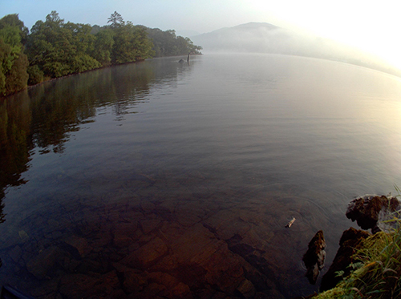

16 Sep
Loch Ness Monster Flees to England Ahead of Scotland's Independence Vote?
By: Betty Chu
Is ol' Nessie making her own political statement by fleeing to England? Or, could this be a distant English cousin, "Bownessie"? ... Orrrr, just another HOAX?
Just days away from a historic vote to determine Scotland's future as part of the United Kingdom, photos of a lake monster spotted in England have been circulating the interwebs. The photo was captured at the Lake District in Windermere, where sightings have been reported since 2006. If it is Nessie, well, she's a good 300 or so miles away from her Scottish home.

Photo Credit: REX USA/Autographer/Rex
Twenty-four-year-old photographer Ellie Williams had set up her camera to snap a few pics on timer of the lovely changing foliage. Upon reviewing her images, she noticed her serendipitous capture:
Photo Credit: REX USA/Autographer/Rex
What do you think? Hoax or REAL? Post your theory in the Comments section below.
In the meantime, watch what Jeremy Wade's investigation into the Loch Ness monster uncovered:
Betty Chu is a Digital Media Executive Producer for AnimalPlanet.com. Follow her on Twitter @beddychew or Facebook.
yes a salt water fish caught off the coast of norway is a much better explanation for years of nessie sightings.
Posted by: wylie | 09/16/2014 at 05:28 PM
I agree, the "animal" depicted is too much like the original photo of Loch Ness that was later proven to be a hoax. I believe that Jeremy Wade discovered the real monster when he caught the Greenland Shark, it makes much more sense.
Posted by: Mischa | 09/16/2014 at 05:16 PM
HOAX.
Looks like a swimming elephant to me.
http://media-cdn.tripadvisor.com/media/photo-s/06/33/d7/28/andbeyond-chobe-under.jpg
Posted by: Bak | 09/16/2014 at 04:48 PM